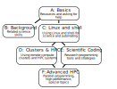

Hands-on Scientific Computing
The transition between courses and exercise and computational research can be difficult - there are so many important things to know that aren’t academic, thus they aren’t taught in courses. This guide is your starting point - we guide you through the practical tools and tricks that you would otherwise have to figure out on your own or learn from friends.
Hands-on SciComp is a “map” of diverse skills that you need for scientific computing, which are often not directly taught in classes these days. It is the practice
Using the material
This is primarily a self-study course and reference material, which you can browse at your own pace as it becomes relevant to you. A coordinated set of levels (~1 day) and modules (~ 1 hour) splits skills into levels depending on your needs. A course instructor or research supervisor might point you at what is most important for your current work. Then, focus on those levels at your own pace.
{kind=link}
This course is coordinated by Aalto University Science-IT (See About for contact info)
Study credits
If you are at Aalto University, you can get study credits. If you are in Finland but not Aalto, you can get credits via the free FiTech program.
Outline
Level |
For who? |
Covers what? |
|---|---|---|
A: Basics: What computing and how? |
Mini-level for everyone who’s doing science with your computer or may need to rely on computing resources later. |
What types of resources are available, when you’d use them, and how to get help. How to set up your computer to do scientific work. What comes next. |
B: Related science skills |
Everyone publishing in a somewhat computational field. |
Making figures, papers, posters, and so on they way it’s done in computational fields. |
C: Scientific computing (Linux and shell) |
Everyone who’s doing more than pointing and clicking single applications on your own computer or needs more computing power. |
In this level, you learn how to extend your power beyond your own computer or existing applications. Includes data management, scripting, Linux, and servers. Linux and the shell are a major point here: this is the defacto (and only) good way to increase power. Equal to the B level. |
D: Clusters and high-performance computing |
Those who need more power than their own computer and need to move to a cluster, whether or not it’s highly parallelized. |
Computing on clusters and remote servers, more advanced Linux, more scripting, batch systems, HPC data management. |
E: Scientific coding |
When you start writing your own software to do your research. |
Version control, how to manage code, software, and data even more. We don’t cover programming itself, just the untaught parts about how to use it as a researcher. Equal to the D level. |
F: Advanced high performance computing |
Those who are programming the most demanding parallel scientific applications. |
MPI (message passing interface, a parallel programming framework), OpenMP (another one), GPU programming, etc. And anything more advanced. |
We have material for different learning styles: you might prefer to watch a video to see quick live examples, or read something for more detail. All of these aspects compliment each other, and you can do what suits you the best.
A: Basics
What’s available? How can it be found? What basic things do you need to install?
About |
Questions |
Video Intro |
Reading |
Aalto |
|
|---|---|---|---|---|---|
Get started with common scientific computing guidelines. |
>What kind of a workflow to follow? >Where to get help? |
>Good computing practices for everyone regardless of skills |
|||
Linux is great for scientific work. This goes over some key things to install to get going. |
>What kind of tools do I need? |
>Software Carpentry set up material |
|||
Get your Mac computer set up for scientific computing tasks. |
>Software Carpentry tutorial for Shell, Git and Nano installations on a Mac. |
>Software Carpentry set up material |
|||
Get your Windows computer set up for scientific computing tasks. |
>Software Carpentry Git Bash tutorial for Windows. |
>Software Carpentry set up material |
C: Linux and shell
The basics which everything else is built on.
About |
Questions |
Video Intro |
Reading |
Aalto |
|
|---|---|---|---|---|---|
C10 Basic shell |
Let’s face it: the command line is the basis of most data science and programming. |
>How does the shell work? >When to use a CLI instead of a GUI? |
>Shell crash course >Software carpentry Shell-novice >The first part of our shell course is good too. |
||
C23 Text editors and IDEs |
Your best friend is a good text editor - sometimes you just need to edit things quickly on some remote system. |
>Which tools to use for code development and editing? |
>Get to know VS Code tutorial series |
>Software Carpentry shell-novice, “Create a text file” part of section 3 >Tutorial on IDEs by CodeRefinery. |
|
C20 Shell scripting |
If you can do it on the Linux shell, you can automate it. |
>How to make use of shell scripting tools in repetitive task automation? |
>Shell scripting tutorials. |
>Continue with the Science-IT Linux shell tutorial part 2. |
|
C21 Version control for you |
Version control lets you track changes, go back in time, and collaborate on code and papers: an absolute requirement for scientific computing. |
>What is Git? >How to initialize a Git repository? |
>Why use version control >Git for beginners |
>Introduction to version control by CodeRefinery |
|
C22 SSH and remote access |
A short but important course: how to do work remotely. Different expert tips for making ssh better, too. |
>What does SSH mean and when to use it? |
>Introduction to secure shell by Software Carpentry |
>SSH for working on a remote machine. |
How to make ssh work better by Aalto Scicomp |
C23 Make |
Automate the repetitive stuff with Make. |
>How can a Makefile be useful in your large project? |
>Episodes on Make by Software Carpentry |
>Short introduction on what is a Makefile and basic operations. >For more information on Makefiles see GNU Make Manual |
D: Clusters and High Performance Computing
Using advanced computational resources. This will be highly site-specific. We include some basic information here, but you will always have to refer to specific site’s instructions.
About |
Questions |
Video Intro |
Reading |
Aalto |
|
|---|---|---|---|---|---|
D01 What is HPC? |
Before you can use larger resources, you need to understand the difference from your own computers |
>What are the scales of computing? |
|||
D20 Modules and software |
Using and installing software on a cluster is different from your own computer, because hundreds of people are sharing it. Modules are the solution. |
>How do you use |
>Triton tutorials for intro: modules, applications, >Lmod user guide |
||
D21 Batch systems |
On a cluster, you have to share resources with others. Slurm is one batch queuing system that makes it possible. |
>What role does the batch system fill? >How does one submit to the batch system? |
Triton tutorials: >interactive, >serial, >array |
Triton tutorials: interactive, serial, array |
|
D22 HPC Storage |
Storage turns out to be just as important as computing power. There are different places available, each with different advantages. |
>Why is storage so important? >How can you monitor input/output (I/O) performance? >How to best handle your data? |
Triton tutorials: storage basics. More advanced: lustre, local storage, small files |
||
D23 Parallel computing |
The point of a cluster is to run things in parallel. Shared memory (OpenMP) and message passing (MPI) are the most common models. Learn how to run them, not write them. |
>What are the main models of parallel code? >How are they run on clusters? >How do you figure out what your code uses? |
Triton tutorials: parallel. |
||
D24 Advanced shell scripting and automation |
Hands-on shell scripting, putting everything together to automate large computations on the cluster. |
Various courses, finishing the linux shell tutorial is a good start. The Advanced bash scripting guide is a classic. |
E: Scientific coding
This isn’t about doing the programming itself, but managing it in research projects. A prerequisite is knowing some programming language already.
About |
Questions |
Video Intro |
Reading |
Aalto |
|
|---|---|---|---|---|---|
E60 Modular code development |
Break your large programs into small problems by separating aspects of desired functionality to different sub-modules. |
>How to divide code into independent modules? >What are pure functions like? |
>Python example of breaking code into small components |
>Lesson on Modular code development by CodeRefinery |
|
E61 Software testing |
It is important to ensure that your program performs effectively and without failures. Adding tests for your software can save a lot of your time later. |
>How to test code on different levels? >What kind of testing tools are there? |
>Software testing fundamentals by Software Carpentry |
>Lesson on testing by CodeRefinery |
|
E62 Profiling |
Code efficiency is critical especially in HPC. Learn to measure the performance of your programs. |
>What is profiling used for? |
>Profiling Python code with cProfile |
>Profiling tools for Linux >Profiling for C and Python >An intro article on Ruby and Python’s profilers |
Triton profiling guide |
E63 Debugging |
Detect, investigate and resolve bugs. |
>How to debug different types of errors? |
>Debugging strategies |
>Debugging in a nutshell. >See Triton’s debugging guide >A hands-on tutorial on pdb debugger |
|
E02 Software Licensing |
Sharing your work can be very beneficial. Take a look at social coding and software licensing. |
>What is free software? >Why should you share your code? |
>Brief introduction to differences between open and closed source software |
>Lesson on social coding by CodeRefinery >Brief guide to licensing |
|
E04 Documentation |
Document your project so other people can easily use the code and even contribute to it. |
>What should be included in a documentation? |
>Documentation with Sphinx |
>Tools for documentation >CodeRefinery lesson on documentation |
|
E03 Reproducible research |
How different tools can improve reproducibility. |
>Which tools can help with reproducibility? |
>What is reproducible research |
>Lesson by CodeRefinery |
F: Advanced high performance computing
Assorted advanced topics which we can’t go into details of, but might be interesting to you.
About |
Questions |
Video Intro |
Reading |
Aalto |
|
|---|---|---|---|---|---|
Fxx Parallel programming computers |
This is an academic course taught in the CS department. It mainly covers OpenMP and CUDA. Usually taught in 5th period (Apr-May), search MyCourses/Oodi for CS-E4580. |
||||
Fxx GPU Programming |
This was an advanced guest course, useful if you want to know how to program GPU applications. |
||||
Fxx MPI Programming |
This was an advanced guest course, useful if you want to know internals of MPI or program MPI applications. |
||||
Fxx HTCondor |
Condor allows you to use many workstations as a high throughput cluster, ideal for mid-range embarrassingly parallel problems. |